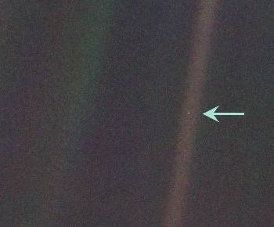

The Earth from 4 billion miles away. This picture was taken by Voyager 1 in 1991 as it approached the outer limits of our solar system.
"The Earth is a very small stage in a vast cosmic arena. Think of the rivers of blood spilled by all those generals and emperors, so that, in glory and triumph, they could become the momentary masters of a fraction of a dot. Think of the endless cruelties visited by the inhabitants of one corner of this pixel on the scarcely distinguishable inhabitants of some other corner, how frequent their misunderstandings, how eager they are to kill one another, how fervent their hatreds. Our posturings, our imagined self-importance, the delusion that we have some privileged position in the Universe, are challenged by this point of pale light."
-- Carl Sagan
From "Pale Blue Dot: A Vision of the Human Future in Space,"
Random
House, 1994
You will need PowerPoint and a dial up connection might be very
slow,
but if you have PowerPoint on your computer, here are some
beautiful
pictures of our Earth to go with Sagan's Blue dot perspective:
Pretty Blue Planet (You
need to click on each picture to advance the slides on this one)
If you don't have PowerPoint on your computer, free PowerPoint
viewers can be downloaded from: